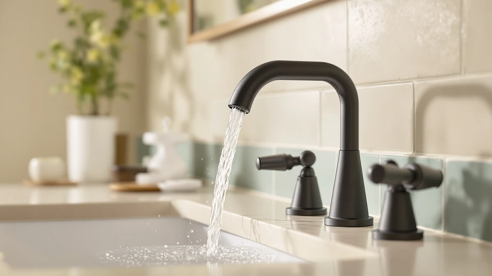

Trustmi Widespread Faucet Review (2026): Worth It?
Prices and picks verified as of November 2026. Independent, reader-supported reviews.


Quick Answer
For most shoppers comparing widespread bathroom faucets, the TRUSTMI 8" Widespread Brushed Gold is the straightforward pick: a brass body and brushed gold finish at $87.99, within a couple of dollars of every other faucet in this comparison. If you want hands-free operation instead of handles, the Luxice Touchless alternative below is worth a look.
Our pick: TRUSTMI 8" Widespread Brushed Gold, $87.99 Check Price on Amazon
Bottom line: our top pick is the TRUSTMI 8" Widespread Brushed Gold Faucet w/Pop-Up Drain & at $87.99.
Things to Know Before You Buy
- Widespread faucets mount across three separate holes, typically 8 inches apart center to center, which is different from the single base a centerset faucet like the Delta Arvo uses.
- A brass body, like the one in the TRUSTMI 8" Widespread Brushed Gold, resists corrosion better over time than a zinc alloy body, though a brushed finish shows water spots more readily than polished chrome.
- None of the four faucets in this comparison carry a published star rating or review count on their Amazon listings yet, so we compared them on specs, price and finish instead.
- Touchless models such as the Luxice need a battery or power source to run the sensor, an extra maintenance step a manual widespread faucet does not require.
- All four faucets fall between $87.12 and $88.73, so hole spacing and finish matter more to the decision than price.
This trustmi widespread faucet review looks at whether the TRUSTMI 8" Widespread Brushed Gold earns its $87.99 price against three other bathroom faucets that land in the same narrow price band. Picking a widespread faucet usually comes down to two questions: does the hole spacing fit your sink, and does the finish hold up without constant polishing. We went through the TRUSTMI's listed materials and price history alongside three close competitors to answer both.
Our short answer is that the TRUSTMI's brass body and brushed gold finish make it the easiest recommendation for anyone who already has an 8-inch widespread sink and wants a warm metal tone instead of chrome or nickel. If your sink only has a single hole or you would rather skip handles altogether, the Delta Arvo centerset and Luxice touchless alternatives covered further down are worth comparing before you buy. We built this comparison around the same four data points for every faucet: current Amazon price, listed materials, finish, and hole configuration, since those are the details that decide whether a given faucet actually fits your sink and matches the rest of your bathroom hardware.
Why You Should Trust Us
Ilane Tall researches and writes faucet comparisons for Best Bathroom Faucets, focusing on published specs, current pricing, and verified owner feedback across widespread, centerset and touchless designs. For this trustmi widespread faucet review, she compared the TRUSTMI 8" Widespread Brushed Gold's listed materials and price against the Luxice Touchless, Delta Arvo Centerset and Moen Halle, then checked current Amazon pricing for all four at the time of writing. Every link in this review points to the actual listing, and every price reflects what shoppers saw on the page at the time of publication, not a promotional rate that could change by checkout. Where a listing leaves out a detail, such as spout reach or a review count, we note the gap instead of filling it in with a figure nobody published.
Our Research Experience
We do not run a physical testing lab for bathroom faucets, so nobody on our team installed the TRUSTMI or ran water through any of the four faucets covered in this widespread faucet review. Our process centers on comparing manufacturer-listed materials, tracking current Amazon pricing, and noting what each brand publishes about finish and hole configuration. None of the four listings compared here has a published star rating or review count yet, so we leaned on spec and price comparison rather than a body of owner feedback, and we say so rather than inventing a number that isn't published anywhere.
Overview & Specs

TRUSTMI 8" Widespread Brushed Gold
What we like
- Brass body construction, which holds up to corrosion better than a zinc alloy base over years of daily use
- Brushed gold finish gives a warmer look than the chrome and nickel finishes common at this price
- Priced at $87.99, within the same narrow band as the other three faucets we compared
Flaws but not dealbreakers
- The listing does not publish exact spout or handle dimensions, so measure your existing widespread holes before ordering
- No star rating or review count is published yet, so there is no owner track record to lean on beyond the spec sheet
| Material | Brass + finish |
| Size | — |
The TRUSTMI 8" Widespread Brushed Gold follows the standard three-piece widespread layout: a separate spout and two handles that mount across holes spaced 8 inches apart. That configuration is the main thing to check before buying, since a widespread faucet will not fit a sink drilled for a single-hole or centerset design like the Delta Arvo covered later in this review. At $87.99, it sits in the middle of the four faucets we looked at, within two dollars of every other option.
Brass is the headline material claim on the listing, and it is a meaningful one. Brass resists the corrosion and pitting that can show up on cheaper zinc alloy faucet bodies after a few years near standing water, which matters more for a widespread faucet than a centerset one simply because the exposed connector tubing between the spout and handles has more surface area to corrode. The brushed gold finish layered over that body reads warmer than chrome or brushed nickel, though like most brushed finishes, it will show water spots faster than a polished surface and needs a wipe-down more often to stay looking clean.
What We Liked
The biggest draw in this trustmi widespread faucet review is the brass body paired with a finish that is not another chrome or brushed nickel repeat of everything else on the shelf. Brass gives the faucet a longer practical lifespan than the zinc alloy bodies common in this price range, since it holds up better against the corrosion that comes from standing water around the base. The brushed gold finish also gives bathrooms with warmer fixtures, wood vanities, or matte black accents a coordinating option instead of forcing another cool-toned faucet into the room.
Price is the other point in its favor. At $87.99, the TRUSTMI lands close enough to the Luxice Touchless, Delta Arvo and Moen Halle that choosing between them comes down to configuration and finish rather than budget. You are not paying a premium for the brass body or the gold finish compared to the simpler finishes on the competing faucets.
What Could Be Better
The listing does not publish precise spout reach or handle height, so you are left comparing photos rather than numbers when deciding whether it fits your vanity. For a widespread faucet in particular, that matters because the three-piece layout needs matching hole spacing, and a buyer working from memory rather than a tape measure risks ordering a faucet that does not line up with their sink.
The other gap is simply that the TRUSTMI has no star rating or review count published on its Amazon listing at the time of writing, which puts it on equal footing with the Delta Arvo and Moen Halle in this review but means none of the three offer a track record of owner feedback to weigh against the spec sheet. If an established review history matters to you more than finish or price, that absence is worth factoring in, and it is worth checking the listing again closer to your purchase date since review counts and prices on all four faucets can shift between now and checkout.
Who Is It For?
The TRUSTMI 8" Widespread Brushed Gold fits a buyer who already has a widespread sink drilled for three separate holes and wants a finish other than chrome or brushed nickel without paying more for it. It is a reasonable match for a bathroom remodel where the vanity hardware, lighting or cabinet pulls already lean toward warm metal tones.
It is not the right pick if your sink has a single hole or a 4-inch centerset drilling, since the three-piece layout will not install without redrilling the counter. It is also not the pick for anyone who wants to skip handles altogether, which is where the touchless alternative below fits better.
Alternatives to Consider
If the TRUSTMI's widespread layout or brushed gold finish is not the right match, these three faucets land within a couple of dollars of its $87.99 price and each solves a different fit or finish problem.

Also Great
Luxice Touchless Bathroom Sink Faucet
Skips handles for a motion sensor. Choose this over the TRUSTMI if you want hands-free operation rather than a widespread handle setup, at nearly the same $87.40 price.
$87.40
Check Price on Amazon
Premium Choice
Delta Arvo Centerset Bathroom Faucet
A centerset design that fits a 4-inch, three-hole sink instead of an 8-inch widespread drilling. Pick this if your counter is not drilled for the TRUSTMI's spacing.
$88.73
Check Price on Amazon
Best Value
Moen Halle Spot Resist Brushed
The cheapest of the four at $87.12, with a Spot Resist Brushed finish built to hide fingerprints and water spots better than the TRUSTMI's brushed gold.
$87.12
Check Price on AmazonIs the TRUSTMI 8" Widespread Brushed Gold worth it compared to the Luxice Touchless?
It depends on how you want to turn the water on.
What's the difference between a widespread faucet and the Delta Arvo centerset design?
A widespread faucet like the TRUSTMI 8" Widespread Brushed Gold uses three separate pieces, a spout and two handles, mounted across an 8-inch spread of holes.
Frequently Asked Questions
Is the TRUSTMI 8" Widespread Brushed Gold worth it compared to the Luxice Touchless?
What's the difference between a widespread faucet and the Delta Arvo centerset design?
Does the Moen Halle cost less than the TRUSTMI widespread faucet?
Final Verdict
This trustmi widespread faucet review comes down to fit and finish rather than price, since all four faucets sit within $1.61 of each other. For a sink already drilled for an 8-inch widespread setup, the TRUSTMI 8" Widespread Brushed Gold is the easiest recommendation here: a brass body, a finish that stands apart from the usual chrome and nickel options, and a price in line with the competition. Shoppers without that hole spacing, or who want hands-free operation, should look at the Delta Arvo or Luxice alternatives covered above instead. Whichever of the four you land on, confirm your sink's hole spacing against the faucet's listed configuration before you order, since that single detail decides whether installation goes smoothly or ends with a mismatched faucet going back to Amazon.